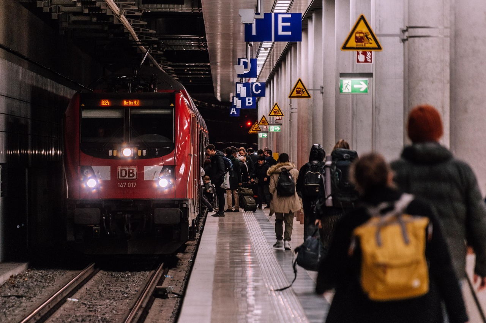

WAMBUI ITOTIA
I am passionate about many things such as learning new things such as cooking and learning new. I have alot of hobbys being swimming, playing piano and netball. I choose softwarre engineering hoping it will allow me to solve real-world solutions.I am very much open to learning during this boot camp.